WORKSHOP / AGENTIC SDLC
Siapa mengerjakan apa?
Pisahkan request aplikasi, pipeline GitHub, dan keputusan manusia.
Satu request: Taksi bandara

Baca alur sebagai teks
- Browser → mengirim POST /claims → Express API
- Express API → memvalidasi dan menyimpan → SQLite
- SQLite → mengembalikan klaim → Express API
- Express API → membalas 201 atau error → Browser
- GitHub Actions → menjalankan test di luar request → Express API
- CodeQL → menganalisis kode tanpa request → Express API
- Browser mengirim judul Taksi bandara dan IDR 250.000 ke
POST /claims, dengan ID akun latihan. - Express mengecek akses karyawan dan jumlah. Baseline mencatat hari UTC saat input. Pada hasil latihan S04, tanggal masa depan berhenti di API dengan HTTP 400 dan tidak mencapai SQLite.
- Jika valid, SQLite menyimpan klaim
pending. Browser membaca tampilan terbaru dan menampilkan bahwa klaim menunggu manager.
Alur agentic

Baca alur sebagai teks
- Issue / Jira → ditugaskan ke → Coding agent
- Coding agent → membuat → Branch dan draft PR
- Branch dan draft PR → memicu → CI dan CodeQL
- Branch dan draft PR → dibaca oleh → Reviewer agents
- CI dan CodeQL → memberi bukti ke → Tech Lead
- Reviewer agents → memberi saran ke → Tech Lead
- Tech Lead → memilih merge sebelum → Docs sync
- Hooks → mencatat metadata ke → Audit
CI dan CodeQL berjalan terpisah dari lalu lintas aplikasi. Billing dan audit juga bukan bagian dari transaksi SQLite.
Peta file .github/

Baca alur sebagai teks
- Copilot cloud atau IDE → membaca → Instructions dan AGENTS.md
- Custom agents → memakai → File agents
- Pembuat endpoint → memanggil → Skill new-endpoint
- CLI atau cloud agent → menjalankan → Hooks
- GitHub Actions → membaca → Workflow lock YAML
copilot-instructions.md- Konvensi kode dan test.
agents/*.agent.md- Profil tujuh spesialis.
skills/new-endpoint/SKILL.md- Prosedur menambah endpoint.
hooks/guardrails.json- Contoh allow/deny dan audit metadata.
workflows/ci.yml- Lint, test dua timezone, dan browser.
workflows/copilot-setup-steps.yml- Persiapan runner coding agent.
workflows/*.lock.yml- Workflow AI yang sudah dikompilasi.
workflows/pages.yml- Publikasi situs statis, bukan server Express.